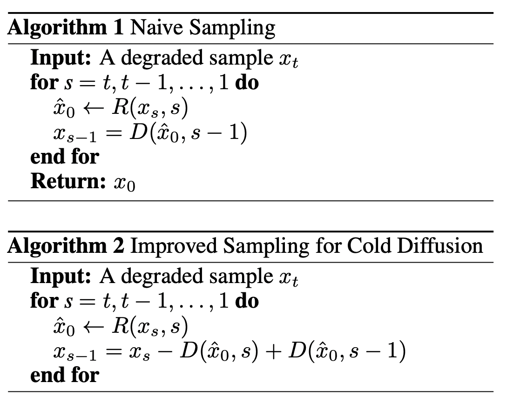

This blog post is an introduction to diffusion models as published in Denoising Diffusion Probabilistic Models [J.Ho et al., 2020] as well as an exploration of investigations into "cold" diffusion models as published in Cold Diffusion: Inverting Arbitrary Image Transforms Without Noise [A.Bansal et al., 2022].
Standard Diffusion
At a high-level, diffusion models are functions that take a "blank" input (typically random noise) and predict how it would need to be transformed in order to output something that looks like it belongs to a dataset it has studied. That dataset, more precisely, represents a statistical population (i.e. a group that cannot be characterized exactly so instead is approximated with samples).
Here is a concrete example: given an image of white noise and having been trained on images of landscape art, a diffusion model would learn what pixel values to subtract from the input in order to produce images that belong to the set of landscape art.
The Gaussian noise the diffusion model takes as a "blank" input can be interpreted as an obscured instance of that unknown population we have approximated with a dataset, degraded by randomness until all its information is lost and it's no longer recognizable.
This destruction process is called forward diffusion and it is the first step in building a diffusion model. The concept is inspired by the physics of molecules and involves replacing values of the input with random noise in iterative steps, much like gradually releasing water vapor into a sauna until it becomes hard to see through the diffused steam.
Forward diffusion: move your cursor from left -> right.
Reverse diffusion: your cursor from right <- left.
As you might imagine, if we can get our hands on many before and after examples of this destruction process then we could conceivably train a neural network to approximate the function that does the reverse, i.e. restore an input that has been highly degraded or entirely destroyed. This recovery process is referred to as reverse diffusion.
Forward Diffusion
Standard forward diffusion is based on a stochastic (i.e. random) destructive process where bits of an image are replaced with Gaussian noise in T steps where T is the total number of iterations the original, unperturbed input gets repeatedly degraded. As the number of times the degradation process is applied (i.e T grows large) the image becomes unrecognizable and we can imagine that as T approaches infinity the result is perfect and absolute randomness. Note that forward diffusion is a continuous function, defined for any T from the set of real numbers.
We can imagine then that the reverse of this function could in theory, literally take completely random noise and map it back to an instance (i.e. an image) that hails from the same population as our training dataset. Given only a partially degraded image it would instead closely restore the original image. Why?
As soon as we begin to inject our input image with random noise, the result becomes a function of randomness and must be expressed as a probability distribution, defined by a mean and variance. Going forward it will be useful to think about each step t in the diffusion process as a probability distribution: the resulting image at step t is just one instance of many possibilities that form a probability density function (a curve so to speak) with some instances more likely than others.
If our original input at step 0 is x0, then the transformed output at step 1 (x1) is defined as a sample from the probability distribution conditional on x0, P(x1 | x0). For step 2, x2 can be defined as a sample from P(x2 | x1)...so on and so forth until xT at step t. Even our original input, x0, can be seen as an instance from an unknown distribution, the population we have approximated with the dataset.
This is referred to as a Markov Chain, a way of describing a sequence of events that have the following property: the probability of any given state in the sequence depends on the state of the one immediately preceding it.
We can express this in closed format as:
q(xT|x0) = q(x1|x0) • q(x2|x1) • ... • q(xT|xT-1)
In practice the proportion of the image that is swapped with noise can be set to vary for each timestep t according to a "variance schedule"
that contains a sequence of ratios [b0, b1 ... bT].
So far then, in order to see what our image would look like at timestep T we would need to calculate T number of conditional probabilities.
You can imagine that this would quickly become impractical for large value of T applied to a large dataset.
Instead, using some clever algebra, [J.Ho et al., 2020] showed it is possible to calculate this in a single step with a tiny amount of pre-calculation.
This is referred to as the reparametization trick.
So that forward diffusion ultimately simplifies to this:
q(xT|x0) = N (xT; √āT•x0, (1 − āT)•I)
Note that the forward process involves no training or neural networks, it is a closed-form formula for taking an input and finding the result of applying a specific amount of random degradations.
If forward diffusion takes the form of q(xt|x0) then reverse diffusion would take the form:
q(x0|xT) where q(xT-1|xT) • q(xT-2|xT-1) • ... • q(x0-2|x1)
The issue is we actually don't know x0, i.e. the distribution of our population,
we only have an approximation and therefore deriving a precise reverse diffusion as we did in for forward diffusion, is not possible.
Instead we approximate this reverse function with a neural network.
This implies we will need to design a loss function (i.e. learning function).
The algebraic derivation of our loss function is relatively complex but let's try to think about it intuitively. In our case we want a loss function that defines the difference (i.e. error) between a picture at an arbitrary timestep T (our target) in the diffusion process and the prediction from our neural net, so we can minimize it.
So the first part, our target at timestep t, is basically an image from the dataset plus a specific amount of entirely random noise. The second part, is what our model predicts that noise will be, conditional on that same image from the dataset. At a high-level we can see that the information about the original picture is present in both the target and our prediction, so the real difference will come from the noise determined by the forward diffusion process and the noise predicted by our model.
Thus our loss function actually simplifies to:
loss = e - reverse(xT, t)
As referred to earlier, the neural network which approximates our reverse process outputs the exact transformation we need to apply in order to restore an image at
ANY stage of degradation. In practice restoring an image in one shot may not be as precise, so we do it in small "jumps" feeding an image one step at a time until we
get to the original.
Cold Diffusion
Cold diffusion and standard diffusion share the same basic principle. Apply a defined destruction process to a sample from an unknown population in t timesteps until it can be considered "blank", then approximate how to restore it from that "blank" state with a neural network so that they belong to that unknown population.
The main difference is that cold diffusion does not depend on randomness to transform the input. Instead, the forward "diffusion" process is an arbitrary image transformation (like pixelation) that may or may not utilize randomness. In the thermodynamic analogy, the "diffused" molecules are no longer energized, they are frozen.
Forward cold diffusion via pixelation: move your cursor from left -> right.
One key difference is that cold diffusion requires a different sampling procedure in order to work. To understand this we must first remember that the reverse process for any diffusion model is only an approximation and thereby has an associated error, that is, it will not restore an image exactly as we input it.
You can imagine that as we repeat this process the accumulated error means we drift from the target and that that error grows as t becomes large. Because standard diffusion has to contend with randomness, that is, it maps from noise to sample, Bansal et al. theorize that the model inherently corrects for errors.
Intuitively, if the model takes perfect noise and restores it by one step with an associated error, the next iteration will take the noise + the error and try to map that back to the correct distribution, so that the model will always be at most approximately t error away.
This is not the case for cold diffusion since the model in the most general form does not know anything about mapping randomness.
To correct that the sampling becomes what is outlined as Algorithm 2:

To empirically test for differences between "hot" and "cold" diffusion, let's implement both models with the same model architecture on the same dataset, Fashion MNIST.
For the time being I haven't been able to replicate the results of the cold diffusion paper. I am using their suggested alternative sampling method and training for longer but the restorations are still blurry. I suspect I am missing something in my implementation because my results look like what they suggest sampling without the appropriate corrections would be like. I will continue to test and post my results when they are done.